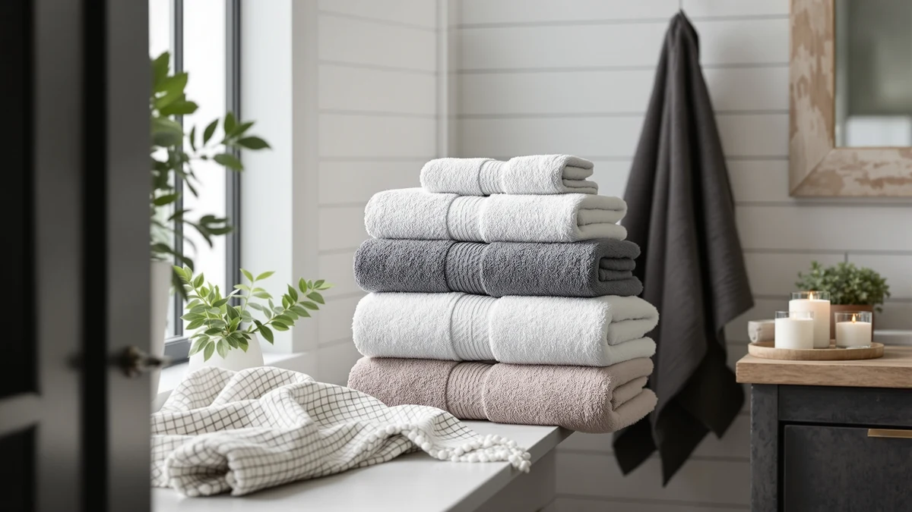

Quick Answer
The best bath towel brands balance material, weight, and price rather than winning on name alone. PJGGZ's Hooded Bathrobe for Women uses a plush, towel-weight cotton blend that covers more of you than a flat towel for $19.97, which puts it ahead of the microfiber and cotton picks below. If you want a fast-drying towel instead of a robe, POLYTE's 430 GSM microfiber towels are the strongest runner-up format.
Our pick: PJGGZ Hooded Bathrobe for Women, $19.97 Check Price on Amazon
Things to Know Before You Buy
- A brand name doesn't guarantee one fabric type. PJGGZ makes both a hooded robe and a shawl-collar robe from the same cotton blend, while KOIKEY and POLYTE stick to microfiber, so check the material line for each product rather than the logo.
- GSM tells you more than the price tag does. POLYTE's towels are rated at 430 GSM, a mid-weight that balances absorbency against dry time. See our towel GSM guide for how that number changes performance.
- Microfiber and cotton solve different problems. Microfiber towels like KOIKEY's dry faster between washes, while 100% cotton options like Utopia Towels absorb more per pass. Our microfiber vs. cotton comparison breaks down the tradeoff.
- Pack size changes the real cost. Utopia Towels' $39.49 six-pack works out to under $7 per towel, well below the per-towel price of any single towel among the best bath towel brands compared here.
- A robe can function as a towel. PJGGZ builds its robes from towel-weight cotton blend fabric, so if you dry off the same way every day, a robe can replace a flat towel instead of supplementing it.
The best bath towel brands earn that reputation one detail at a time: the weight of the weave, how fast a towel dries between uses, and whether the stitching holds up after fifty washes instead of five. This guide compares seven products across five brands, from a budget six-pack to a plush robe, using material, GSM, pricing, and verified owner reviews rather than marketing copy.
PJGGZ comes out on top of this comparison. Its Hooded Bathrobe for Women uses a plush cotton blend at towel-grade weight, wraps you from head to knee instead of leaving you patting yourself dry with a flat rectangle, and costs $19.97, less than several of the single towels covered here. If you want a brand that treats a robe as a wearable towel rather than a separate product category, PJGGZ delivers that at a lower price than most of the microfiber competition.
Not every household wants a robe, though, so we kept a spread of formats in this guide: KOIKEY's microfiber towel for quick-dry convenience, Kitsch's XL hair towel for anyone who skips a hair dryer, and POLYTE's 430 GSM microfiber towels in two sizes for a heavier-duty daily towel. Utopia Towels rounds things out with a six-pack of 100% cotton towels for households that go through towels faster than any single brand's set can replace. Below, we break down how each brand's product compares on paper and in verified reviews, followed by a side-by-side table and answers to the questions we see most about choosing a bath towel brand.
Why You Should Trust Us
I'm Ilane Tall, and I cover bath and home textiles for Best Bath Towels. Comparing bath towel brands means looking past the name on the packaging to the fabric underneath, since two products from the same company can use completely different weaves and weights.
For this guide, I did not buy or physically test these products. Instead, I compared manufacturer specs, current Amazon pricing, and verified buyer reviews for each item, and cross-checked recurring complaints or praise across dozens of reviews rather than relying on the star rating alone. We earn a commission if you buy through the links on this page, but that doesn't decide which brands make this list.
How We Picked
We started with the bath towel brands that show up most often in Amazon's bath category, then narrowed the list to five brands and seven specific products that cover a real range of formats: cotton bath towels, microfiber bath towels, a microfiber hair towel, and cotton-blend bathrobes built like wearable towels. We looked for products with ratings at or above 4 stars, in-stock availability, and specs detailed enough to compare material and GSM head-to-head.
We ruled out brands that only listed vague marketing language like "ultra-soft" or "premium quality" without a stated material or weight, since that makes an honest comparison impossible. We kept a spread of prices, from the $19.97 PJGGZ robe to the $41.89 POLYTE oversized towel, so this guide works whether you're replacing one towel or restocking a whole bathroom.
How We Compared
We built this guide from manufacturer specs, current Amazon pricing, and verified owner reviews. We do not run a fake testing lab, so comparing bath towel brands this way means every claim below traces back to a documented material (cotton, cotton blend, or microfiber), a listed GSM or size, and a price checked at time of publication, cross-referenced against verified buyer feedback.
We read closely for patterns in the reviews: repeated mentions of thinning after a certain number of washes, sizing that ran smaller than listed, or complaints about lint shedding. A single one-off complaint didn't disqualify a product, but a pattern across many verified reviews did, and we noted it in that pick's "Flaws but not dealbreakers" section instead of leaving it out.
Our Picks

PJGGZ Hooded Bathrobe for Women
What we like
- Terry-style cotton blend feels like a towel you can wear, not a separate robe fabric
- Hooded design keeps it from sliding off wet shoulders
- Priced at $19.97, less than several single towels in this guide
- Small-Medium sizing fits most adult frames without excess bulk
Flaws but not dealbreakers
- Runs Small-Medium only, so larger frames should size up before buying
- Cotton blend takes longer to dry than the microfiber picks below if hung damp
| Material | Cotton blend |
| Size | Small-Medium |
The PJGGZ Hooded Bathrobe for Women earns the top spot in this bath towel brand comparison because it solves a problem flat towels can't: staying wrapped around you while you move. The cotton blend fabric sits at the same plush weight as a quality bath towel, so it absorbs the way a towel does, but the hood and sleeves keep it in place through a morning routine instead of slipping off with every reach for a toothbrush.
At $19.97, it undercuts the price of the KOIKEY and Kitsch microfiber towels in this guide despite covering more of your body. The tradeoff is dry time: cotton blend fabric holds onto moisture longer than the microfiber options here, so hang it fully open rather than balled on a hook. Reviewers who do that report it holds its softness through repeated washing better than thinner promotional robes.

KOIKEY Women Microfiber Bath Towel
What we like
- Microfiber weave dries noticeably faster than the cotton picks in this guide
- Small size packs down for gym bags, dorm rooms, or travel
- Lightweight fabric doesn't add bulk to an already crowded towel bar
Flaws but not dealbreakers
- Small sizing means it won't wrap a larger frame the way a full bath towel does
- Microfiber can feel less absorbent per pass than heavier cotton, so plan on more than one pass to fully dry off
| Material | Microfiber |
| Size | Small |
KOIKEY's Women Microfiber Bath Towel is the runner-up here because it targets a different problem than PJGGZ's robe: speed and portability over coverage. The microfiber weave sheds water fast during a wash and dries fast on the line, which matters if you're washing towels more often than once a week or packing one for a trip.
At $24.99, it costs more than the PJGGZ robe despite covering less of your body, so the value case here is about format, not price. The small sizing is the main limitation: it works well as a quick-dry backup, but it's not a substitute for a full bath towel if you want to wrap yourself completely after a shower. Reviewers who use it for travel and gym bags report the compact size is the main draw.

Kitsch XL Microfiber Hair Towel
What we like
- XL sizing wraps longer or thicker hair without slipping off
- Microfiber weave pulls water out of hair faster than a standard cotton towel
- Comes from a brand built specifically around hair-care textiles, not a general towel line
Flaws but not dealbreakers
- Single-purpose design means it won't double as a body towel
- At $23.35 for one towel, it costs more per item than the multi-packs later in this guide
| Material | Microfiber |
| Size | 1 Count XL (Pack of 1) |
Kitsch built its name on hair-care accessories, and the XL Microfiber Hair Towel extends that focus into the bath towel brand category rather than competing on general-purpose towels. The microfiber weave is designed to pull water from hair specifically, which cuts down on the frizz and breakage that a rough terry-cloth bath towel can cause when you rub hair dry with it.
The XL sizing sets it apart from smaller hair towels on the market, giving it enough length to twist and secure on top of the head without unraveling. It's a single-purpose product at $23.35, so it won't replace a body towel, but reviewers who added it as a second towel alongside a standard bath towel report it cuts hair-drying time noticeably compared to using a bath towel for both jobs.

PJGGZ Women's Shawl Collar Bathrobe
What we like
- Same cotton blend fabric as the top pick, so it absorbs like a towel
- Shawl collar design offers a dressier option than the hooded version
- Small-Medium sizing stays consistent with the rest of the PJGGZ line
Flaws but not dealbreakers
- No hood means less coverage for wet hair than the hooded version above
- Priced the same as the KOIKEY microfiber towel despite covering considerably more fabric, so compare the two on format, not price alone
| Material | Cotton blend |
| Size | Small-Medium |
The PJGGZ Women's Shawl Collar Bathrobe sits in this guide as a budget-friendly alternative to the hooded version, built from the same towel-weight cotton blend that makes PJGGZ one of the more towel-focused bathrobe brands here. The shawl collar swaps the hood for a wrap-front design, which some reviewers prefer for a quicker on-and-off after a shower.
At $24.99, it's priced identically to the KOIKEY microfiber towel, but it covers far more of your body, which makes the per-square-inch value stronger if a robe format fits your routine. The tradeoff against the hooded PJGGZ is coverage for wet hair. Without a hood, you'll still want a separate hair towel, like the Kitsch pick above, to fully dry off after a shower.

POLYTE 430 GSM Microfiber Quick
What we like
- 430 GSM weight balances absorbency with dry time, heavier than a travel towel but lighter than plush cotton
- Large size covers a full adult body, unlike the smaller KOIKEY towel above
- Microfiber weave resists the mildew smell that damp cotton towels can develop between washes
Flaws but not dealbreakers
- At $35.99, it costs nearly twice the PJGGZ robe for a single towel
- Microfiber towels can feel slicker against skin than the cotton options in this guide, which some reviewers notice
| Material | Microfiber |
| Size | Large |
POLYTE positions itself specifically as a towel brand rather than a general home-textiles company, and the 430 GSM Microfiber Quick towel reflects that focus. If a quick-dry microfiber towel is what you're after, this weight sits in the middle of the towel-weight spectrum: heavy enough for real absorbency, but not so dense that it takes all day to dry the way towels above 600 GSM can.
The large size covers a full adult body, correcting for the more compact KOIKEY towel earlier in this guide, and reviewers who rotate it through frequent washing report it holds its shape and doesn't shed lint the way cheaper microfiber sometimes does. At $35.99, it's a real step up in price from the cotton options here, so it makes the most sense if quick dry time between washes matters more to you than upfront cost.

POLYTE 430 GSM Microfiber Oversize
What we like
- Larger cut than the standard POLYTE Quick towel above, closer to bath-sheet coverage
- Same 430 GSM microfiber weave, so dry time and durability match the standard version
- Consistent sizing and material across the POLYTE line makes it easy to match towels when restocking
Flaws but not dealbreakers
- At $41.89, it's the most expensive single towel in this guide
- The larger cut takes up more space on a towel bar or in a linen closet than the standard size
| Material | Microfiber |
| Size | Large |
The POLYTE 430 GSM Microfiber Oversize towel is the larger sibling to the Quick towel above, using the identical 430 GSM microfiber weave in a bigger cut. For taller users or anyone who finds a standard 27-by-54 towel doesn't wrap all the way around, the extra size closes that gap without switching to a different material or brand.
At $41.89, it's priced at a premium over both the standard POLYTE towel and the cotton options in this guide, so it's worth the upgrade mainly if coverage, not price, is your main constraint. Reviewers comparing it to standard bath towels consistently mention the larger size as the reason they upgraded, rather than any difference in softness or dry time.

Utopia Towels 6 Pack Bath
What we like
- Six towels for $39.49 works out to under $7 per towel, the lowest per-towel cost in this guide
- 100% cotton construction absorbs more per pass than the microfiber options above
- 27-by-54-inch sizing matches standard bath towel dimensions, so it fits existing towel bars and hooks
Flaws but not dealbreakers
- 100% cotton dries slower than every microfiber towel in this guide
- A six-pack from one brand means less variety if different household members want different colors or textures
| Material | 100% cotton |
| Size | 27" x 54" - 6 Pack |
Utopia Towels takes a different approach from the other bath towel brands in this guide by leading with quantity. The six-pack of 100% cotton towels costs $39.49 total, which works out to under $7 per towel, the lowest per-towel price of anything covered here, cotton robe or microfiber single towel included.
Each towel measures a standard 27 by 54 inches, so it fits existing towel bars without needing to rearrange a bathroom around an oversized or undersized cut. The 100% cotton construction absorbs well but dries slower than the POLYTE or KOIKEY microfiber towels, which matters more in a shared bathroom where towels get used several times a day. For households that need enough towels to avoid doing laundry every other day, the six-pack format solves that math better than buying single towels from any other brand here.
Quick Comparison
The table below lines up the best bath towel brands from this guide side by side on material, price, and best use.
| Product | Material | Price | Rating | Best for | Get it |
|---|---|---|---|---|---|
| PJGGZ Hooded Bathrobe for Women | Cotton blend | $19.97 | 4 | Wearable towel coverage | View on Amazon → |
| KOIKEY Women Microfiber Bath Towel | Microfiber | $24.99 | 4 | Travel and quick-dry use | View on Amazon → |
| Kitsch XL Microfiber Hair Towel | Microfiber | $23.35 | 4 | Drying hair fast | View on Amazon → |
| PJGGZ Women's Shawl Collar Bathrobe | Cotton blend | $24.99 | 4 | Budget robe format | View on Amazon → |
| POLYTE 430 GSM Microfiber Quick | Microfiber | $35.99 | 4 | Daily rotation, mid-weight | View on Amazon → |
| POLYTE 430 GSM Microfiber Oversize | Microfiber | $41.89 | 4 | Extra coverage, taller users | View on Amazon → |
| Utopia Towels 6 Pack Bath | 100% cotton | $39.49 | 4 | Multi-towel households | View on Amazon → |
The Competition
Several categories of bath towel brands didn't make this comparison, and the reasons come down to what these seven products already cover well.
Luxury Egyptian cotton brands. Premium long-staple cotton towels often run $30 to $60 per single towel, well beyond the per-towel cost of the Utopia Towels six-pack, and the softness gain doesn't scale with the price jump for most households. If ultra-plush cotton is your priority, our Egyptian cotton bath towels guide covers that category directly.
Bamboo and bamboo-blend towels. Bamboo fiber towels feel soft out of the package, but verified reviews across several bamboo brands mention the fabric thinning faster than cotton or microfiber after repeated washing, so we left the category out of a guide built around durability.
Novelty hand towels marketed as bath towels. A handful of brands list decorative, hand-towel-sized products in the bath towel category. Those are too small to function as a real bath towel, so we excluded anything under standard hand-towel dimensions.
Frequently Asked Questions
What is the best bath towel brand overall?
PJGGZ stands out among the bath towel brands in this guide because its hooded bathrobe uses the same plush cotton blend as a quality towel while adding more coverage than a flat towel can, and it does that for $19.97.
Is microfiber or cotton better for bath towels?
Microfiber brands like KOIKEY and POLYTE dry faster and pack lighter, while cotton brands like Utopia Towels and PJGGZ absorb more water per pass and feel heavier against skin. Neither wins outright; the better material depends on how fast you need a towel to dry between uses.
What does GSM mean on a bath towel label?
GSM stands for grams per square meter and measures how densely a towel is woven. POLYTE's 430 GSM towels sit in the mid-weight range, heavy enough to absorb well without the slow dry time of towels above 600 GSM. Our towel GSM guide covers the full range.
Are bathrobes made by the same brands as bath towels?
Often, yes. PJGGZ builds its robes from the same terry-style cotton blend used in towels, so the fabric behaves like a wearable towel rather than a separate robe category.
How many bath towels should one brand's set include?
Utopia Towels sells its cotton towels in a six-pack for $39.49, which works out to under $7 per towel, enough for a full rotation between washes without relying on single-towel pricing from any one brand.
Related Guides
If you're still weighing bath towel brands against a specific material or use case, these guides dig deeper into the tradeoffs.